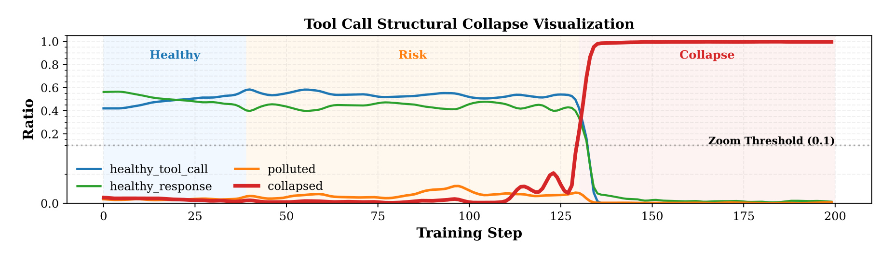
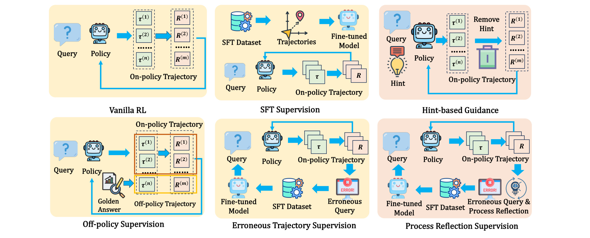
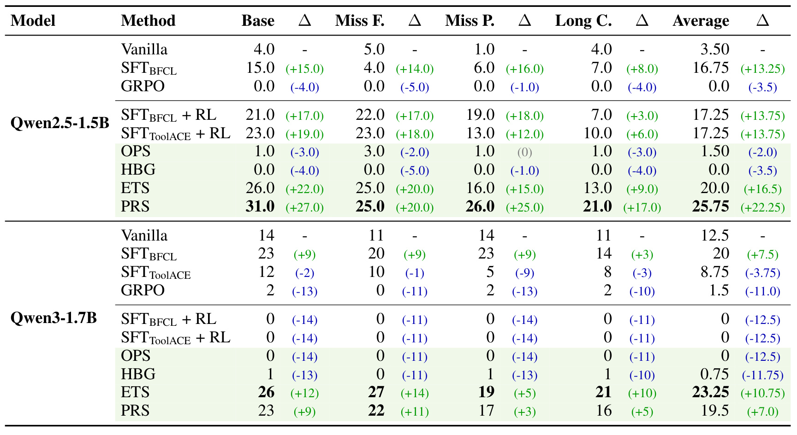
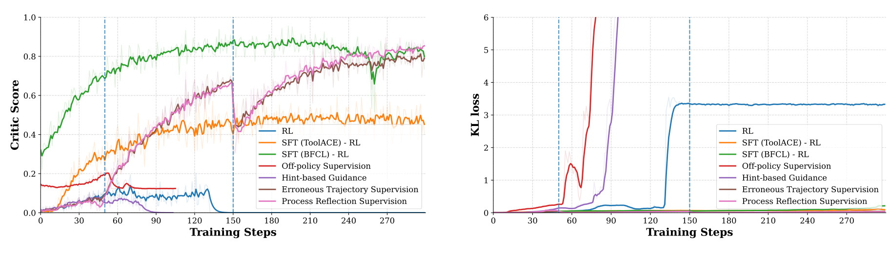
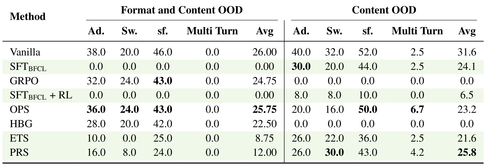
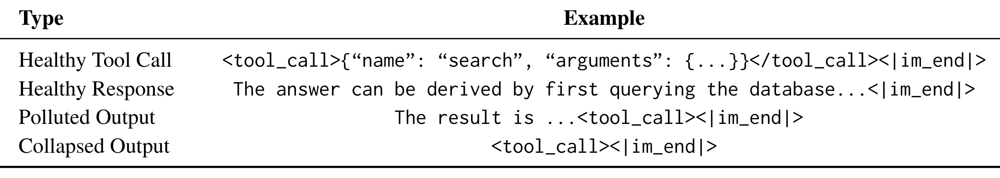
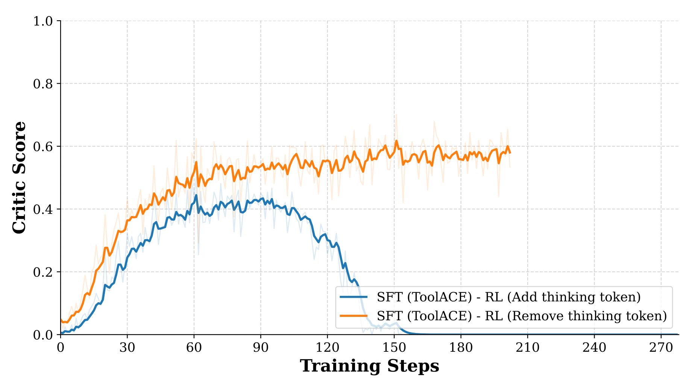

这篇论文的英文题目是 Why Multi-Step Tool-Use Reinforcement Learning Collapses and How Supervisory Signals Fix It，中文可以译作“为什么多步工具使用 RL 会崩塌，以及监督信号如何修复它”。一作与主要作者来自中国科学院自动化研究所认知与决策智能重点实验室、中国科学院大学人工智能学院；论文入口是 arXiv:2606.26027。摘要页给出了 Tool-RL-Box 代码入口，本轮只核验到链接存在，没有执行代码或复现实验。本文在今日 LLM 论文里值得单独精读，是因为它没有停留在“RL 能不能提升 tool-use”这个粗问题上，而是把失败定位到控制 token、工具调用格式、监督信号接入方式和 OOD 格式泛化之间的张力。
多步工具调用不是普通问答任务：RL 奖励看似在强化成功轨迹，却可能把 <tool_call>、<|im_end|> 这类控制 token 的概率推到异常尖峰，使模型突然从可执行的工具调用结构滑向污染输出或完全崩塌；论文要解决的核心问题，是如何在不抹掉探索能力的情况下给 RL 足够的结构监督。
1. 背景和问题
大模型工具使用的难点，不只是“会不会调用一个函数”。在真实 agent 链路里，模型要根据历史动作、工具反馈、用户追问和环境状态连续决策：先判断是否要调用工具，再填参数，再等待返回，再继续下一步。如果只是单轮 function calling，输出格式错了还能通过 parser 或 retry 修一下；但多步工具调用里，任何一个控制 token 错位都可能让后续轨迹失去可执行性。本文的切入点正是这个结构性风险：当 RL 直接优化最终任务成功或工具执行奖励时，它可能学到“某些结束符、工具标签、格式片段和 reward 的相关性”，但未必学到稳定的多轮协议。
作者把多轮工具轨迹写成动作和反馈交替的序列。直观地说，模型在第 t 步看到前面的动作和反馈，再决定下一步是自然语言回答、工具调用，还是继续等待环境。这个建模方式把 tool-use 和普通文本生成区分开来：普通文本可以在局部 token 上逐步纠错，多步工具轨迹却要保持全局结构合法。一个输出如果把 <tool_call> 打开但没有正确闭合，或者在工具 JSON 中间塞进 <|im_end|>，系统侧看到的不是“语义稍差”，而是“调用协议坏了”。因此，论文关心的 collapse 不是泛泛的 loss 震荡，而是 tool invocation structure failure。

Figure 1 是这篇论文最重要的问题图。横轴是 RL 训练步数，纵轴是四类输出比例：健康工具调用、健康自然语言回复、污染输出和崩塌输出。早期健康工具调用和自然语言回复还能共存，说明模型不是一开始就不会用工具；中段开始出现 polluted，代表输出里混入了不该出现的特殊 token 或半截工具标签；到后段 collapsed 快速接近 1，说明模型输出几乎全变成无效或错误格式。图中最关键的不是“分数下降”，而是状态转移路径：模型先从结构清晰进入污染，再进入完全崩塌。这支持作者的判断：RL 训练把概率质量推向某些控制 token 组合，而不是简单把工具能力训练没了。
这一区分很重要。若失败来自能力丧失，我们可能需要更大模型、更多工具数据或更强推理；若失败来自控制 token 动态，修复方向就变成“如何给探索加结构边界”。论文在引言和 4.3 中反复强调，底层 tool-use capability 可能仍在，只是被特定 prompt format 和控制 token 分布遮蔽了。这也解释了一个看似反直觉的现象：有些模型在训练动态里崩得很厉害，但换到另一种调用格式或 OOD 评估协议时仍能恢复一部分表现。也就是说，collapse 既是训练失败，也是格式敏感性的放大镜。
本文把输出状态分成四类：Healthy Tool Call 是完整合法的工具调用；Healthy Response 是没有工具标签、但能正常结束的自然语言回复；Text Polluted 是工具标签和文本边界开始混杂；Collapsed 是几乎只剩结束符或极短无意义控制序列。这个分类让“崩塌”从主观观察变成可统计对象：可以数 token、画频率曲线、对照训练步数，也可以看不同监督信号是否延缓或消除污染阶段。
对推荐系统和大模型工程来说，这个问题并不抽象。很多推荐、搜索、广告和数据平台开始让 LLM agent 调用检索、画像、规则配置、实验分析和报表工具。系统真正害怕的不是模型偶尔答错一句话，而是模型在多步链路中生成一个 parser 无法处理的 tool call、错误提前终止，或者在看似成功的轨迹里污染状态。本文的价值就在于：它提醒我们，tool-use RL 的优化目标必须同时关心任务成功和协议稳定，否则标量 reward 会把系统推向“短期能拿分、长期不可执行”的方向。
从训练目标看，作者批评的是一种常见但危险的简化：把多轮工具任务压成“最终成功给 1、失败给 0”的标量反馈。这个反馈在单轮数学题或短答案任务里可能已经足够，但在工具调用里，它无法告诉模型哪一类结构是危险的。比如一次轨迹失败，可能是工具名选错、参数漏填、环境反馈误读，也可能只是结束 token 提前出现；如果这些错误都被同一个 0 奖励覆盖，policy update 就会把不同错误混在一起处理。论文观察到的控制 token 尖峰，正是这种粗反馈和结构化输出之间的冲突：reward 没有明确惩罚“格式边界被污染”的早期迹象，直到整个调用协议失效，模型才在最终分上暴露问题。
作者选择 BFCL-V3 和 ACEBench 也服务于这个问题设定。BFCL-V3 要求模型在多轮环境里连续调用工具，Miss Func、Miss Param 等设置会让模型面对缺函数、缺参数或上下文复杂度；ACEBench 则进一步改变工具类型和调用格式。这样的组合比单个 function-calling leaderboard 更接近真实 agent：线上系统里工具表会更新，schema 会变，用户会插入 follow-up，服务端也可能要求不同模板。因此本文不是在证明某个训练技巧绝对最好，而是在说明结构化协议一旦参与 RL，训练分布、格式分布和评估分布必须一起看。
这也给“监督信号”赋予了更具体的含义。监督并不只是多放一些正确答案，而是要把模型从污染阶段拉回可执行状态：让它知道什么时候该输出工具调用、什么时候该用自然语言结束、工具标签在哪里闭合、错误轨迹应该如何被重写。若监督信号只覆盖任务答案，却不覆盖协议结构，它可能提高短期分数，却无法防止 Figure 1 里从 risk 区域滑向 collapse 区域。
还有一个容易混淆的点：本文说的 collapse 不是“模型不愿意调用工具”。Figure 1 早期的 healthy tool call 比例很高，说明模型已经具备某种调用能力；崩塌发生在 RL 更新逐步改变 token 分布之后。因此，作者并不主张回到纯 SFT，而是希望找到能保护结构、又允许 RL 探索的训练方式。这一定位让论文比简单的 SFT-vs-RL 对比更细，也更适合指导后训练工程。
更细地看，本文的风险边界还包括“自然语言回复”和“工具调用”之间的选择。多步任务并不总是每一步都调用工具，模型需要知道何时继续查、何时汇总、何时结束。如果控制 token 分布被 RL 扭曲，模型不只是工具 JSON 写错，也可能把本应自然语言解释的步骤误写成半截工具调用。这个边界问题正是单轮准确率难以捕捉的。
2. 方法
2.1 多轮工具轨迹的形式化
论文先给出一个很简洁的轨迹表示。多轮工具使用轨迹记为 (\tau=(a_1,r_1,a_2,r_2,\ldots,a_T,r_T))，其中 (a_t) 是第 t 步动作，可以是工具调用，也可以是自然语言响应；(r_t) 是环境或用户反馈。反馈函数写成：
符号解释：(R) 表示反馈函数，(a_t) 是当前动作，(a_1,r_1,\ldots,a_{t-1},r_{t-1}) 是当前动作之前的交互历史，(\mathcal{R}) 是反馈空间。它可以包括工具执行结果、后端状态变化，也可以包括用户继续追问。这个式子说明工具使用不是独立样本分类，而是状态依赖的交互过程。接着，模型下一步动作的采样写成：
符号解释：(P) 是模型策略诱导出的动作分布，(a_t) 是从历史条件下采样出的下一步动作。这个公式看起来普通，但它解释了为什么多轮 tool-use RL 容易出问题：控制 token 的一点点偏移会被后续历史条件继续放大，形成链式污染。作者后面的所有监督信号，本质上都在回答一个问题：怎样让 (P) 在探索新轨迹时仍然尊重工具调用结构。
2.2 结构崩塌的诊断：能力没有完全消失，格式先坏掉
作者在 4.2 和 4.3 里先比较纯 RL 与 SFT 后再 RL 的训练动态。直接 RL 在 Qwen2.5-1.5B-Instruct 上会出现 reward 突降和 KL spike；Qwen3-1.7B 的不稳定较轻，但纯 RL 的收益也有限。更关键的是，作者检查生成轨迹后发现，错误集中在 <tool_call>、</tool_call>、<|im_end|> 这些结构 token 的组合方式，而不是模型突然不懂任务本身。训练推进后，模型越来越容易把工具调用标签和自然语言边界混在一起，最终生成极短的终止序列。
这就是本文的核心机制判断：tool-use RL 的崩塌首先是结构 token 分布崩塌，而不是推理能力整体崩塌。 如果只看最终任务分数，很容易把它误判成“RL 没学会工具任务”；但如果看输出状态和 token 频率，就能看到更细的路径：先污染，再崩塌，再表现为分数掉到接近零。作者还指出，某些 OOD 格式下直接 GRPO 反而保留了一些表现，这进一步说明能力可能被训练格式遮蔽，而非完全丢失。
2.3 监督信号的统一比较框架

Figure 3 把论文比较的训练策略放在一张图里。Vanilla RL 只从 policy 采样 on-policy trajectory，再用 reward 更新；SFT Supervision 先在专家轨迹上微调模型；Hint-based Guidance 在采样时把提示附在 query 前，但优化时移除提示；Off-policy Supervision 把 golden/off-policy trajectory 混入训练；Erroneous Trajectory Supervision 从失败 query 里构造纠错 SFT；Process Reflection Supervision 则把错误轨迹和过程反思一起转成监督数据。图里最值得看的是信息流的位置：有的信号改变采样输入，有的改变 SFT 数据，有的改变 on/off-policy 混合，有的在 RL 轮次之间交错插入监督更新。SFT 的目标函数是标准专家轨迹模仿：
符号解释：(D_{\mathrm{SFT}}) 是专家轨迹数据集，(q) 是 query，(\tau) 是专家轨迹，(a_t) 是第 t 步动作，(\pi_\theta) 是当前模型策略。这个目标能让模型学会基础调用格式和 instruction following，但它受数据覆盖限制，不能主动探索专家轨迹外的行为。
Off-policy Supervision 试图把高质量示范混入 on-policy 探索。作者先把 on-policy 和 off-policy 奖励放在同一集合里标准化优势：
符号解释：(\hat{A}i) 是第 i 条轨迹的标准化 advantage，(R(\tau_i)) 是该轨迹 reward，(G) 分别是 on-policy 与 off-policy 轨迹奖励集合。随后使用 clipped policy objective：}}) 和 (G_{\mathrm{off}
符号解释：(Z=\sum_i |\tau_i|) 是归一化项，(D_{\mathrm{on}}) 与 (D_{\mathrm{off}}) 是两类轨迹集合，(r_{k,t}(\theta)) 是新旧策略概率比，(\epsilon) 是 clip 阈值。它的直觉是让正确示范参与 reward update，但实验显示同步混合未必足够稳定，因为 off-policy 轨迹和当前采样分布仍可能错位。
2.4 Hint、错误轨迹与过程反思
Hint-based Guidance 的公式是：
符号解释：(H_q) 是给 query (q) 添加的提示，(\tau_{i,<t}) 是当前轨迹前缀。关键设计是：hint 只在采样阶段帮助模型走向正确轨迹，优化时把 hint 移除，避免推理时依赖外部提示。这个方案看似干净，但实验里收益有限，说明“告诉模型怎么走”不等于“让策略本身学会稳定结构”。Erroneous Trajectory Supervision 更贴近交错训练：第 k 轮把所有采样轨迹都失败的 query 收集起来，再把这些 query 的标注轨迹作为下一轮纠错数据：
符号解释：(Q) 是 query 集合，(T_q) 是 query (q) 的采样轨迹集合，(R(\tau^{\prime})=0) 表示该采样轨迹失败，(\tau_{\mathrm{label}}) 是对应 ground-truth 轨迹。对这些错误 query 再做监督学习：
符号解释：(E_k) 是第 k 轮错误监督集，(a_t) 是标注轨迹里的正确动作。这个目标把“RL 探索暴露出来的失败点”转成下一轮 SFT 的纠错样本，所以它不是静态专家模仿，而是随训练动态更新的结构修复。Process Reflection Supervision 再往前走一步，把当前 policy 的轨迹交给辅助分析器生成反思文本，使监督不只包含正确动作，也包含对中间错误的解释：
符号解释：(r^{\mathrm{ref}}_\tau) 是针对轨迹 (\tau) 的文本反思，内容包括中间决策、结构错误和推理缺口。其训练损失合并反思文本学习和错误轨迹纠错：
符号解释：第一项让模型学习过程反思，第二项沿用错误轨迹的动作监督。它的直觉是，工具调用失败不只需要“正确答案”，还需要把中间步骤为什么错、哪一步结构边界坏了写成可学习信号。这也是本文最有迁移价值的地方：监督信号不是替代 RL，而是在 RL 暴露失败后，把失败变成下一轮结构约束。
这里的 paper order 也很重要：作者不是先提出一个复杂新算法，再用实验证明它有效；而是先观察崩塌，再把可能的监督信号放进同一框架比较。这样的写法使方法部分更像诊断实验设计。读这篇论文时，与其把 OPS、HBG、ETS、RPS 看成互相独立的 tricks，不如把它们看成四种不同的结构干预位置：改采样条件、改轨迹来源、改错误回流、改过程解释。
3. 实验结果
3.1 设置：BFCL-V3 训练，ACEBench 泛化
实验使用 BFCL-V3 多轮工具使用 benchmark，关注 Base、Miss Func、Miss Param、Long Context 四个设置。训练时从前三个设置各随机采样 100 个实例，共 300 个问题；Long Context 因上下文过长不进入训练，只用于评估。模型包括 Qwen2.5-1.5B-Instruct 和 Qwen3-1.7B。SFT 阶段把多轮交互拆成多个单轮实例训练；RL 阶段则采用完整多轮工具使用设置，模型必须完成整个交互轨迹并正确调用工具才得到正反馈。泛化评估使用 ACEBench，作者区分了 content OOD 和 format OOD：前者是工具类型/场景没见过，后者是调用模板和 Qwen 原生格式不同。
训练细节也影响结论。SFT 配置包括 3 个 epoch、batch size 128、学习率 1e-5、最大序列长度 8192；RL 配置包括 300 total training steps、batch size 60、PPO mini-batch size 20、学习率 1e-6、每条轨迹最多 30 turns、KL loss coefficient 0.0001。作者还说明 Qwen3 在 RL 训练时会在每个 action 前加 <think>\n\n</think>\n\n 来关闭 thinking mode，但梯度更新时移除这个前缀；这个看似实现细节，后来成为 Qwen3 崩塌分析的重要原因。
3.2 主结果：纯 GRPO 很脆，交错监督更稳

Table 1 给出最直接的结论。对 Qwen2.5-1.5B-Instruct，Vanilla 平均分只有 3.50，纯 GRPO 直接掉到 0，说明没有结构先验时 RL 不但没有提升，反而进入崩塌。SFTBFCL 把平均分提高到 16.75，SFTBFCL+RL 和 SFTToolACE+RL 都到 17.25，说明先做 SFT 的确能给工具调用一个可用起点。但最强的是交错类监督：ETS 平均 20.0，PRS 平均 25.75，Base 上 PRS 达 31.0，Miss Param 上 PRS 达 26.0，Long Context 上 PRS 达 21.0。这个排序支持作者的核心判断：不是所有“加监督”都一样，真正有价值的是能把失败轨迹和过程信息反哺给训练的监督。
Qwen3-1.7B 的结果更复杂。Vanilla 平均 12.5，比 Qwen2.5 的起点高，但 SFTToolACE 反而掉到 8.75，纯 GRPO 只有 1.5，SFT+RL 系列甚至为 0。相反，ETS 平均 23.25，PRS 平均 19.5。也就是说，更强或更新的模型不必然更稳定；如果 prompt format、thinking wrapper 和 SFT 数据分布不一致，SFT then RL 反而会把模型推向错误格式。这里最有启发的是：工具使用训练不能只比较“模型更大或更强”，还要比较“训练数据格式是否和 RL 采样格式一致”。
主结果还有一个容易被忽略的细节：OPS 和 HBG 在 Qwen2.5 上几乎没有带来收益。OPS 平均只有 1.50，HBG 为 0；这说明把正确轨迹混进来，或者在采样时给 hint，并不能自动解决结构崩塌。原因可能在于，这两类方法仍然没有把“当前 policy 为什么失败”转成持续的结构纠错。OPS 面临 on/off-policy 分布不一致，HBG 面临训练和推理条件不一致；它们都能在局部给模型更多提示，却不能保证策略本体学会稳定的工具边界。ETS 和 PRS 的优势，恰好来自它们和训练过程的耦合：先让 RL 暴露失败，再把失败 query 或过程反思变成监督信号。
PRS 在 Qwen2.5 主结果里最好，也不是因为它简单“多加了文本”。按作者描述，RPS 会把中间轨迹送入辅助分析器，生成对决策、结构错误和推理缺口的 textual reflections，再和错误轨迹监督一起训练。这个信号对多轮工具调用尤其重要，因为失败常常发生在中间步骤：模型可能第一步选对工具，第二步参数错，第三步读错反馈，最后输出格式坏掉。只监督最终答案，模型看不到哪一步的结构选择有问题；过程反思则把这些局部错误显式化，给后续策略更新提供更接近因果链的学习对象。

Figure 5 把结果表背后的训练过程展开。左侧 critic score 曲线可以看出不同方法的上升速度和最终位置；右侧 KL loss 曲线显示策略偏移是否过大。纯 RL 和部分同步监督在 KL 上出现异常变化，说明策略更新在控制 token 空间里变得激进；交错式 ETS、PRS 虽然也会改变策略，但更像是在错误暴露后定向修正。对工程训练来说，这张图的意义是：只看最终成功率会漏掉“中途是否已经结构污染”的风险，训练监控应该同时记录 reward、KL、格式错误率、特殊 token 频率和 parser failure，而不是只盯一个 average score。尤其是右侧 KL 曲线和左侧分数曲线并不总是同步改善：某些方法分数上升时已经伴随策略剧烈偏移，这类阶段若继续训练，可能很快进入 Figure 1 所示的污染和崩塌区间。
3.3 诊断口径：污染和崩塌到底是什么

Table 3 是附录里的小表，但很适合解释本文的验收口径。Healthy Tool Call 是完整的 <tool_call>{...}</tool_call><|im_end|>；Healthy Response 是自然语言后正常结束；Polluted Output 是文本中混入了未闭合或错位的工具标签；Collapsed Output 则接近 <tool_call><|im_end|> 这种无语义最短序列。这个表让 Figure 1 里的 polluted/collapsed 不再只是曲线标签，而是可以落到真实日志解析规则上。
如果把这套分类迁移到线上 agent，建议至少记录四类指标：合法工具调用率、合法自然语言回复率、污染率、完全崩塌率。污染率尤其值得监控，因为它通常早于最终分数崩溃出现。很多系统会把“执行失败后 retry 成功”算成最终成功，但对训练来说，污染已经说明策略分布出了问题。本文提示我们，tool-use RL 的 early warning 不应该只来自业务 reward，也应该来自结构 token 和协议解析层。
3.4 OOD 泛化：稳定性不是免费午餐

Table 2 讨论的是 Qwen2.5-1.5B-Instruct 在 ACEBench 上的泛化。左半是 Format and Content OOD，右半是 Content OOD。一个重要现象是：在 ID 或 BFCL-V3 主结果上很强的 SFT 类方法，到格式和内容同时 OOD 时可能完全失效。比如 SFTBFCL 在 Format+Content OOD 的平均分为 0，SFTBFCL+RL 也为 0；而 Vanilla 仍有 26.00，GRPO 有 24.75，OPS 也有 25.75。作者据此认为，SFT 可能把模型绑在训练时的调用语法上，提升 ID 稳定性，却带来格式过拟合。
右半的 Content OOD 又给出另一层信息：如果只换内容和工具类型、格式不完全变，部分方法的表现仍能保留。例如 Vanilla Avg 31.6，SFTBFCL Avg 24.1，OPS Avg 23.2，PRS Avg 25.8；但 GRPO、HBG 在 Content OOD 上为 0。这个结果不能简单解读成“RL 泛化更好”或“SFT 泛化更差”，更准确的说法是：结构监督能稳住 ID 工具格式，但若监督信号过度绑定格式，它会把工具能力锁在训练模板里。因此，修复 collapse 和提升 OOD 是两个不同目标，不能用一个 ID 分数同时证明二者。
从数值上看，Table 2 还揭示了“看起来崩塌的方法”与“OOD 下仍能答对”的差异。GRPO 在 Format+Content OOD 的 Avg 是 24.75，接近 Vanilla 的 26.00，但在 Content OOD Avg 为 0；OPS 在 Format+Content OOD Avg 是 25.75，在 Content OOD Avg 是 23.2。这些数字说明，格式变化和内容变化不是同一种泛化。某些方法可能没有在训练模板下保持稳定，却没有完全丢失工具能力；另一些方法可能在原格式下学得更规整，但换模板后 parser 语法假设被打破。对生产部署而言，这意味着 validation set 应该同时包含“同 schema 新内容”和“新 schema 同任务”两类测试，不能只用一种 OOD 代表全部泛化。
Multi Turn 列也值得注意。无论 Format+Content OOD 还是 Content OOD，多轮列整体都很低，很多方法为 0 或接近 0。作者没有把它包装成已经解决的问题，而是说明多轮泛化仍然困难。这个结果对 agent 训练尤其现实：单步工具调用可通过模板和 SFT 快速拉升，多步链路却会把错误累积、上下文长度、工具反馈解释和格式边界全部叠在一起。即使 PRS 在若干平均分上最好，它也没有让 ACEBench 多轮项变成高分，这说明过程监督只是稳定训练的一步，还不是完整的 multi-turn robustness 方案。
3.5 Qwen3 的 thinking token 问题

Figure 8 对 Qwen3 的崩塌给了更具体的解释。蓝线代表在 SFT(ToolACE)-RL 中加入 thinking token 占位，曲线先升后在约 130-160 步附近快速掉到接近 0；橙线代表移除 thinking token，占位不一致问题缓解后，critic score 持续上升并保持在较高水平。作者在附录 C 解释，Qwen3 原本设计为 thinking mode，需要显式 reasoning segment；但 SFT 数据只有直接 tool-call 输出。如果 RL 阶段 prompt 又插入 thinking 相关 token，而 SFT 分布没有这个结构，就会引入 SFT distribution 与 RL sampling format 的不一致。
这张图对实际训练很有警示。很多团队会在后训练里混用不同 chat template、tool schema、thinking wrapper、system prompt 或服务端 parser，但只记录“数据集”和“模型版本”。本文显示，格式包装本身就可能决定 collapse 是否发生。复现实验时，如果只照抄 reward 和 learning rate，而忽略模板、特殊 token、是否强制 thinking、SFT 数据是否包含同样包装，就可能得到完全相反的结论。
3.6 学习率和训练数据分布的附加结论
论文还分析了学习率和 SFT 数据分布。Figure 4 显示，在 Qwen2.5 上，过保守的 1e-6 学习率并不一定稳定，反而可能让 SFT(BFCL)、SFT(ToolACE) 或 ETS 的收益不足；1e-5 在某些设置下更好。作者给出的解释是，多步 agentic 行为需要足够大的更新来修正结构行为，太小的学习率不能真正纠偏。但这并不等于“学习率越大越好”，因为同步训练下共享学习率仍可能引起 KL 和输出分布快速漂移。
数据分布方面，BFCL 和 ToolACE 的作用不同。BFCL 更贴近训练与评估任务，能提高基线表现；ToolACE 提供额外工具使用轨迹，能增强结构初始化，但也可能引入格式差异。论文的强结论不是某个数据集绝对更好，而是：SFT 数据、RL 采样格式、评估 parser 和模型自身 template 必须被视为一个系统。如果这些环节不一致，监督越强，反而越可能把模型锁进错误格式。
论文的实验还提醒我们，评估最好保留训练过程中的 best checkpoint 和 final checkpoint 两种口径。附录 D 说明，某些模型在中间阶段表现很好，但收敛到最终 checkpoint 时不能保持收益。对 RL 训练而言，这不是小问题：如果只保存最后一步，可能错过结构仍健康的中间状态；如果只汇报最高分，又会掩盖后续 collapse。更稳妥的做法是同时报告最终分、最高分、崩塌发生步数和结构错误率曲线。
4. 总结
4.1 我的判断
这篇论文的主要贡献，是把 tool-use RL 的失败从“训练不稳定”细化为“控制 token 结构崩塌”。这个视角很实用，因为它给出了可监控、可诊断、可修复的对象：不是只看任务 reward，而是看 <tool_call>、闭合标签、结束符、污染输出和 parser failure 的动态。对多步 agent 系统来说，这比只报告 benchmark average score 更接近生产问题。
我认为最值得带走的结论有三点。第一，纯 RL 在多步工具调用上风险很高，尤其是小模型或结构先验不足时，reward 会过度放大控制 token 捷径。第二，SFT 不是万能稳定器；如果 SFT 数据格式和 RL 采样格式不一致，SFT 可能让 ID 变稳、OOD 变差，甚至在后续 RL 中触发崩塌。第三，交错式监督更有前途，因为它把 RL 暴露的错误转成下一轮结构学习，而不是静态地把专家轨迹和 sampled trajectory 混在一起。
更严格地说，本文给出的不是一个可以直接照搬的 recipe，而是一套实验审计方式。以后看到“某模型通过 RL 学会工具调用”这类结论，我会先问四个问题：训练过程有没有记录结构 token 频率；是否报告了 parser-level failure；SFT 和 RL 是否使用完全一致的 tool schema；是否在 format OOD 上验证过。只有这些问题都有答案，RL 提升才更可能是真正的工具能力提升，而不是某个模板下的短期适配。
4.2 工程启发与复现建议
如果要把这篇论文的思路迁移到推荐、搜索或广告平台的 LLM agent，我会优先做四件事。第一，在训练日志中加入结构级指标：合法工具调用率、污染率、完全崩塌率、特殊 token 频率、parser error、retry 后成功率。第二，统一 SFT、RL、评估和线上服务的 tool schema、chat template、thinking wrapper；任何模板变化都应作为实验变量记录。第三，把失败 query 回流成 ETS 样式的纠错 SFT 数据，尤其关注“所有采样轨迹都失败”的 query，而不是只回收最终成功轨迹。第四，对复杂任务引入过程反思或 step-level diagnostics，让模型学习“为什么这一轮调用坏了”，而不是只学习最后答案。
复现时要特别注意几个边界。论文使用的训练数据规模相对有限，作者也在 Limitations 中说明没有探索数据规模影响；因此不能把 300 个训练问题上的结果直接外推到所有 tool-use RL。表格中的分数也依赖 BFCL-V3、ACEBench、Qwen 原生格式和具体 reward design。尤其是 Qwen3 的 thinking token 分析，说明 prompt implementation 就能改变结论，所以复现报告必须写清模板细节，而不是只写模型名和学习率。
4.3 局限与后续跟进
本文还有几个明显局限。第一，开源可验证工具环境有限，训练数据规模较小，尚不清楚更大规模、多域工具数据下 collapse 是否同样发生。第二，实验主要在 Qwen2.5-1.5B 和 Qwen3-1.7B 上，未覆盖更大模型、闭源模型或不同 tokenizer 的控制 token 行为。第三，Process Reflection Supervision 使用辅助分析器生成反思文本，论文没有充分展开反思质量、成本和错误反思带来的风险。第四，OOD 泛化结果提醒我们，ID 稳定与格式泛化之间存在张力，但论文还没有给出完整的格式鲁棒训练方案。
后续我会关注三条线索：一是 Tool-RL-Box 代码仓库是否补齐可复现实验脚本和数据下载说明；二是是否有后续工作把结构 token regularization、parser-aware reward 或 constrained decoding 引入 tool-use RL；三是能否把本文的输出状态分类接入真实 agent 服务日志，用线上 parser failure 和特殊 token drift 做训练前预警。对推荐系统里的 agent 化工具链来说，这篇论文最直接的提醒是：让模型会调用工具只是第一步，让它在 RL 探索中始终遵守调用协议，才是能否进入生产链路的门槛。
如果这条线继续发展，我更期待看到 reward 设计和解码约束的结合：一边用 parser-aware reward 明确惩罚早期污染，一边用 constrained decoding 或 schema checker 阻断明显非法的控制 token 组合。这样才能把本文的诊断从离线分析推进到训练时干预。